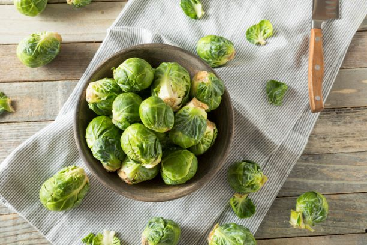

One of our core aims here at Out of This World is to promote and sell as wide a range of locally produced goods as possible.
We greatly believe in reducing food miles, thereby reducing greenhouse gas emissions, and feel that selling locally produced items benefits the local community in countless ways. By selling local produce we aim to help create a thriving local community and were always on the look out for new locally produced product ranges.
 Although, not just for Christmas, these mini cabbages have a nutty, distinct flavour and are a perfect accompaniment to meat dishes. These are not only delicious but have lots of health benefits such as they are high in fiber, vitamin C and K, they reduce inflamation, help with blood sugar regulation and many more benefits.
 Mid or Baby salad potatoes have thin whispy skins and a crisp waxy texture. These are always sourced locally and keep their shape once cooked and cut. They are planted close together and never grow to their full extent and are therefore particularly suited to salads.
Mid or Baby salad potatoes have thin whispy skins and a crisp waxy texture. These are always sourced locally and keep their shape once cooked and cut. They are planted close together and never grow to their full extent and are therefore particularly suited to salads.
 Beetroot is in season from May to October in the UK. Beetroot evolved from wild seabeet which is a native of coastlines from India to Britain. The familiar rounded root variety was developed around the sixteenth century and gained widespread popularity in Europe a couple of hundred years later.Fresh beetroot has much to commend it in terms of flavour (sweet, slightly earthy), texture (smooth and velvety) and colour (dark red/purple, or an appealingly lurid pink when combined with cream or yoghurt). Beetroot has higher sugar content than most vegetables,rich in vitamin C, fibre, potassium, magnesium, manganese, and folic acid. The leafy tops are an excellent source of beta-carotene, iron and calcium.
Beetroot is in season from May to October in the UK. Beetroot evolved from wild seabeet which is a native of coastlines from India to Britain. The familiar rounded root variety was developed around the sixteenth century and gained widespread popularity in Europe a couple of hundred years later.Fresh beetroot has much to commend it in terms of flavour (sweet, slightly earthy), texture (smooth and velvety) and colour (dark red/purple, or an appealingly lurid pink when combined with cream or yoghurt). Beetroot has higher sugar content than most vegetables,rich in vitamin C, fibre, potassium, magnesium, manganese, and folic acid. The leafy tops are an excellent source of beta-carotene, iron and calcium.
 Mushrooms are cultivated in the UK all the year round. Though as we all know, they can be gathered wild from our fields during the Autumn and Spring times. But the use of cultivated mushrooms in the UK is as recent as the 1880s.The Ancient Egyptians believed that mushrooms gave eternal life - so only the Pharoahs were allowed to eat them.The vast majority of mushrooms sold in the UK are the white mushroom variety agaricus bisporus. These are either seen as button mushrooms, close cup mushrooms, open cup mushrooms and large open cup mushrooms. Only a tiny minority are the more specialist varieties, which include chestnut, shitake, porcini and oyster.
Mushrooms are cultivated in the UK all the year round. Though as we all know, they can be gathered wild from our fields during the Autumn and Spring times. But the use of cultivated mushrooms in the UK is as recent as the 1880s.The Ancient Egyptians believed that mushrooms gave eternal life - so only the Pharoahs were allowed to eat them.The vast majority of mushrooms sold in the UK are the white mushroom variety agaricus bisporus. These are either seen as button mushrooms, close cup mushrooms, open cup mushrooms and large open cup mushrooms. Only a tiny minority are the more specialist varieties, which include chestnut, shitake, porcini and oyster.
 Hate plastic; buy your milk instead in traditional glass bottles. We will happily collect these for you, when we pop out with your next order. You can buy the raw milk in either 3, 5, 10, 15 or 20 litre options. The raw milk will arrive in 1 litre plastic bottles, to make it easier for you to freeze and use a bit at a time, if you should wish. We pride ourselves on producing the freshest possible raw products at our farm for our customers and currently we run our cream separator twice weekly on a Monday and Thursday.
Hate plastic; buy your milk instead in traditional glass bottles. We will happily collect these for you, when we pop out with your next order. You can buy the raw milk in either 3, 5, 10, 15 or 20 litre options. The raw milk will arrive in 1 litre plastic bottles, to make it easier for you to freeze and use a bit at a time, if you should wish. We pride ourselves on producing the freshest possible raw products at our farm for our customers and currently we run our cream separator twice weekly on a Monday and Thursday.
 We use a Texel breed of lamb which is well known for its high muscle content. This is important in lamb as it’s traditionally one of the more fattier meats. A high muscle content produces more tender cuts with a better texture. New season's fresh East Country lamb Chops - these little chaps are reared on lush green grazing & we think that three of these little beauts will be enough for one person; great on the BBQ too!
We use a Texel breed of lamb which is well known for its high muscle content. This is important in lamb as it’s traditionally one of the more fattier meats. A high muscle content produces more tender cuts with a better texture. New season's fresh East Country lamb Chops - these little chaps are reared on lush green grazing & we think that three of these little beauts will be enough for one person; great on the BBQ too!
 Brilliant value - Freerange eggs in the traditional half dozen to the box
Brilliant value - Freerange eggs in the traditional half dozen to the box
| Monday | 09:00 | - | 18:00 |
| Tuesday | 09:00 | - | 18:00 |
| Wednesday | 09:00 | - | 18:00 |
| Thursday | 09:00 | - | 20:00 |
| Friday | 09:00 | - | 18:00 |
| Saturday | 10:00 | - | 18:00 |
| Sunday | 11:00 | - | 16:00 |